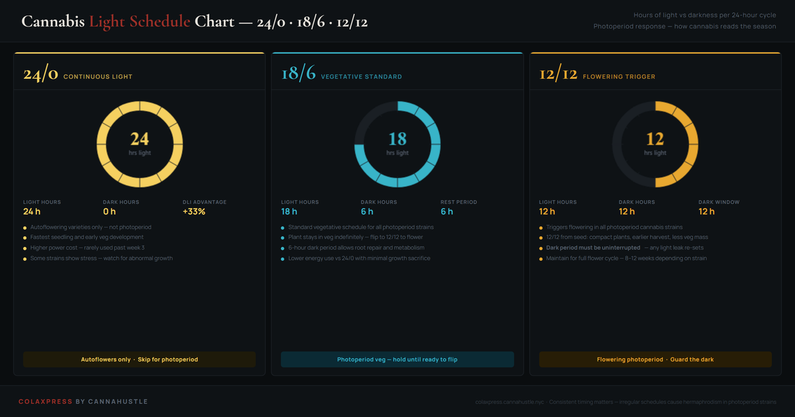

Cannabis light schedule: 12/12, 18/6, and 24/0 explained.
Cannabis is a photoperiod plant. In nature, the shift from long summer days to shorter autumn days is the signal that triggers flowering. Indoor growers replicate this by controlling the hours of light and darkness in a 24-hour cycle. The three schedules — 24/0, 18/6, and 12/12 — each produce a different outcome, and understanding why helps you choose the right one for your setup and strain.
The most important rule in photoperiod growing: the dark period is inviolable. A single light leak during the 12-hour dark window can re-vegetate a plant mid-flower, cause hermaphrodism, or slow flowering by weeks. Protect the dark more than you protect the light.

Why 12/12 triggers flowering
Cannabis produces a protein called phytochrome that exists in two forms: Pr (red-light absorbing) and Pfr (far-red absorbing). During the lit period, light converts Pr to Pfr. During the dark period, Pfr converts back to Pr at a fixed rate. When the dark period reaches approximately 12 hours, enough Pfr converts back to Pr that the plant interprets this as "nights are getting longer" — the autumn signal — and begins the hormonal cascade that initiates flowering.
This is why any interruption of the dark period matters so much. Even a few seconds of light exposure pauses the Pfr-to-Pr conversion. The plant's biological clock restarts from that point, and the dark period must reach the threshold again from the beginning. A brief light leak at hour 8 of a 12-hour dark period means the plant effectively experienced only an 8-hour dark period, not 12 — and stays in, or reverts to, vegetative mode.
| Schedule | Phase | Best for |
|---|---|---|
| 24/0 | Veg only | Autoflowers, seedlings |
| 20/4 | Veg | High-DLI photoperiod veg |
| 18/6 | Veg | Standard photoperiod veg |
| 12/12 | Flower | All photoperiod flower |
| 11/13 | Late flower | Speed up final ripening |
The compact grow method
Running 12/12 from the moment seeds sprout — or from week 2 of seedling — forces a photoperiod plant to flower while it is still small. The result is a shorter plant that finishes in less total time. The trade-off is lower yield per plant, since the plant has less veg mass to convert to flower. For single-plant DWC setups in compact cabinets, 12/12 from seed is often the practical answer. This is the approach covered in the 12/12 from seed guide.
Switching from 18/6 to 12/12
The rule of thumb: flip when the plant is half the final height you want, because most strains stretch 50–100% after the flip. In a compact 4-foot cabinet, flip at 18–24 inches. In a 5-foot tent, flip at 24–30 inches. If you wait too long, the canopy hits the lights mid-flower and there is no recovery. Err early — you can always train or tuck during stretch. You cannot undo a heat-burned canopy at week 11 of flower.
How to seal your tent
Stand inside the tent with all vents closed at night. If you can see any light at all, the tent is leaking. Common failure points: zipper seams (use Velcro light blocks), ducting ports (use iris dampers or light-trap collars), and the bottom floor flap. A $10 roll of Panda film and some black gaffer tape solves most leaks permanently. Check again after moving or adjusting any equipment inside.
Light schedule questions
When should I switch from 18/6 to 12/12?
Switch to 12/12 when the plant is approximately half the final canopy height you want — most photoperiod strains stretch 50–100% in height during the 2–3 weeks after the flip, and that stretch cannot be undone. In a compact 4-foot cabinet, flip at 18–24 inches. In a 5-foot tent, flip at 24–30 inches. Err on the side of flipping earlier rather than later: you can manage a plant that stretches more than expected by tucking and training, but you cannot lower a canopy that has already burned on a light in week 9 of flower.
Can you keep a photoperiod plant on 18/6 indefinitely?
Yes. Photoperiod cannabis stays in vegetative growth as long as the uninterrupted dark period remains shorter than the plant's critical threshold — approximately 12 hours for most cannabis varieties. Plants kept on 18/6 will continue vegetating, branching, and growing without any flowering response. This is the basis of mother plant management, where plants are maintained for months or years in permanent vegetative state to produce clones.
What light schedule should autoflowers use?
Autoflowering varieties do not respond to photoperiod — they flower based on age, typically 3–5 weeks after germination regardless of light schedule. Most growers run autoflowers on 18/6 from seed to harvest as a practical balance of growth rate and heat management. Running 20/4 increases yield slightly in some autoflower genetics but also increases heat and electricity cost. The 24/0 schedule works for some varieties but eliminates the plant's natural dark rest period; results vary by genetics.
Why does a single light leak during dark period matter so much?
A light interruption during the 12-hour dark period resets the plant's phytochrome conversion clock. The biological process that signals "night is long enough to flower" is cumulative — if light hits the plant at hour 8 of darkness, it effectively experienced an 8-hour night, not 12. The clock does not resume from hour 8; it restarts from zero. Repeated light leaks cause delayed flowering, re-vegetative growth mid-flower, and hermaphrodism in stress-sensitive strains. Check zipper seams and ducting ports first — these are the most common failure points in tent setups.
Related guides
12/12 from seed guide
The full walkthrough for running 12/12 from seedling in a compact DWC setup.
Cannabis grow stage timeline
Week-by-week timeline showing where the 12/12 flip fits in the full grow arc.
VPD chart for cannabis
Environmental targets by stage — how VPD and humidity shift after the flip.